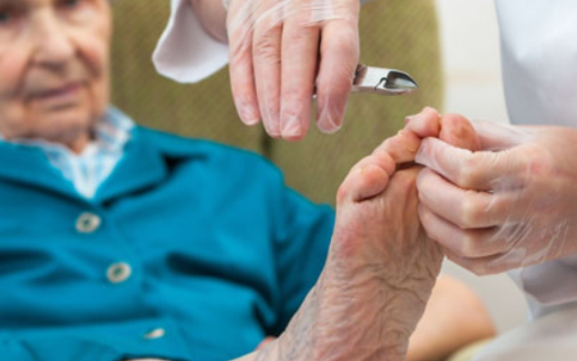
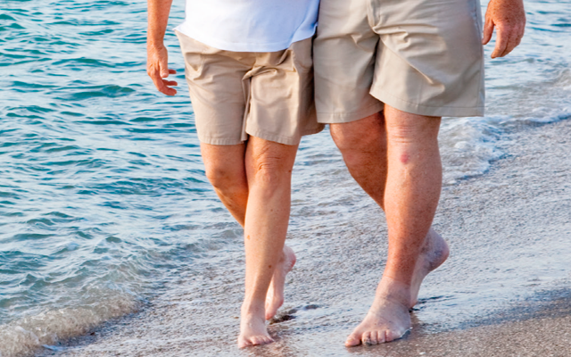

GERIATRICA
Mais que estética somos saúde
Image




Podologia geriátrica visa os aspectos preventivos da atenção à saúde dos pés da pessoa idosa
e tem por objetivo amenizar alterações nos pés,
causadas ou agravadas pelo processo de envelhecimento,
primando pela melhora na qualidade de vida.
A Podogeriatria é uma especialização da podologia que cuida de pacientes da terceira idade, pois,
nesta fase da vida, muitos pacientes não conseguem cuidar plenamente de si mesmos. Nota-se que a alteração na deambulação (caminhar), muito comum nos idosos,
não gera só problemas físicos, mas também transtornos psicológicos, por exemplo: reclusão, irritação, depressão e baixa autoestima.
Nós recomendamos:
■ Usar calçados apropriados
■ Ter uma hidratação correta
■ Use modelos, se necessário
■ Visitar o podólogo regularmente: o atendimento regular por um podólogo pode melhorar a independência de uma pessoa idosa e prevenir quedas.
Marcar minha consulta!